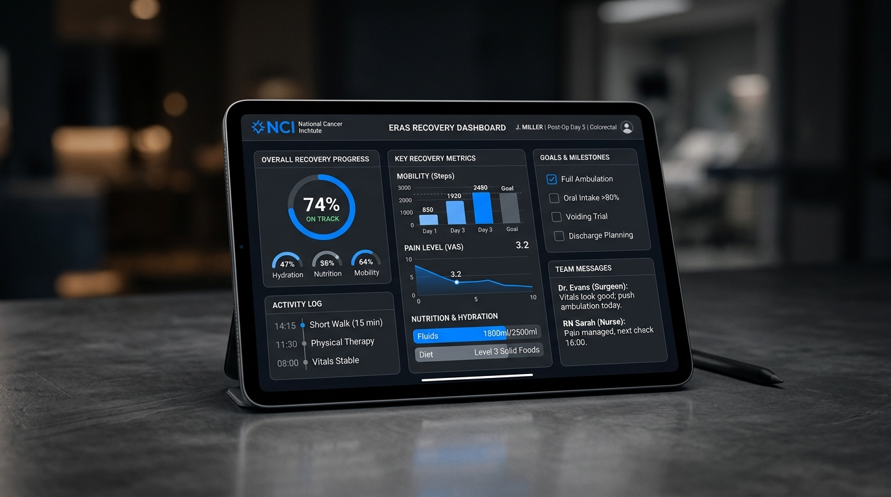

สถาบันมะเร็งแห่งชาติ (National Cancer Institute)
ERAS Protocol Data Collection
ระบบจัดเก็บและประเมินผลการดูแลผู้ป่วยผ่าตัดโรคมะเร็งแบบยกระดับการฟื้นตัวหลังผ่าตัด (Enhanced Recovery After Surgery)

ครอบคลุมการบันทึก 6 หมวดตามมาตรฐานสากล
รวบรวมตัวแปรสำคัญทางคลินิกครบถ้วน เพื่อการวิจัยและการปรับปรุงคุณภาพการดูแลผู้ป่วยผ่าตัดมะเร็ง
1. ข้อมูลพื้นฐานผู้ป่วย
HN, AN, วันเกิด, ส่วนสูง, น้ำหนัก คำนวณอายุและ BMI อัตโนมัติ
2. ประเมินก่อนผ่าตัด
ICD-10, Staging, ASA Score, NRS-2002 (แจ้งเตือนความเสี่ยงสูง ≥3)
3. ERAS Compliance Checklist
การปฐมนิเทศ, Carbohydrate loading, ระยะเวลางดน้ำเปล่า (เป้าหมาย 2-3 ชม.)
4. ข้อมูลระหว่างผ่าตัด
เวลาลงมีด-เย็บแผล, วิธีผ่าตัด (Open/Lap/Robotic), ปริมาณสารน้ำ เสียเลือด
5. การฟื้นฟูหลังผ่าตัด
เวลาเริ่มลุกเดิน (≥15 นาที), จิบน้ำ, ถอดสายปัสสาวะ, Pain score, MME
6. ผลลัพธ์ & ภาวะแทรกซ้อน
คำนวณ Length of Stay (LOS) อัตโนมัติ, Clavien-Dindo Classification
ผลสัมฤทธิ์ทางการแพทย์ด้วยแนวทาง ERAS
ลดระยะเวลานอน รพ.
25-35%
เทียบกับการดูแลแบบดั้งเดิม
เป้าหมาย Compliance
≥ 80%
อัตราปฏิบัติตามเกณฑ์ ERAS
ลดภาวะแทรกซ้อน
40%
ลดการเกิด Clavien-Dindo ≥ Grade II
ภาพรวมการประเมิน ERAS สถาบันมะเร็งแห่งชาติ
สรุปสถิติตัวชี้วัดการดูแลผู้ป่วยผ่าตัดและอัตราความสมบูรณ์ในการปฏิบัติตามแนวทาง ERAS
ผู้ป่วยในระบบทั้งหมด
0
เคสผ่าตัดที่จัดเก็บข้อมูล
อัตราปฏิบัติตามเกณฑ์เฉลี่ย
0%
ERAS Overall Compliance Rate
ระยะเวลานอน รพ. เฉลี่ย (LOS)
0 วัน
Length of Stay (วัน)
อัตราเกิดภาวะแทรกซ้อน 30 วัน
0%
30-day Complication Rate
อัตราการปฏิบัติตามเกณฑ์ ERAS รายหมวด (%)
ERAS Protocol Compliance Breakdown
สัดส่วนวิธีการผ่าตัด (Surgical Approach)
Laparoscopic vs Robotic vs Open
ระดับความรุนแรงภาวะแทรกซ้อน (Clavien-Dindo)
Postoperative Complications Classification
ทะเบียนผู้ป่วย ERAS (Patient Registry)
ค้นหา ตรวจสอบข้อมูล และส่งออกรายงานสำหรับการวิจัย
| HN | AN | เพศ / อายุ | วินิจฉัย (ICD-10) | วิธีผ่าตัด | ERAS Compliance | LOS | ภาวะแทรกซ้อน | จัดการ |
|---|
บันทึกข้อมูลผู้ป่วย ERAS รายใหม่
กรอกข้อมูลคลินิก 6 หมวดตามเกณฑ์มาตรฐานสถาบันมะเร็งแห่งชาติ